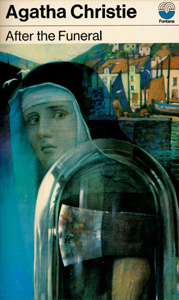
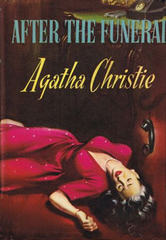
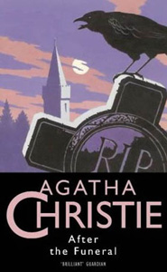
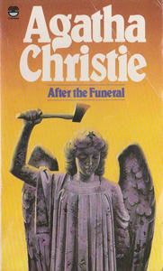
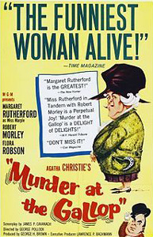
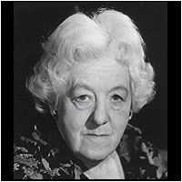

1963 - Murder At The Gallop
Murder At The Gallop was based on Agatha Christie's 1953 Poirot novel After The Funeral - and changed Hercule Poirot for Miss Marple as the detective.





Screen Versions
Directed by George Pollock in 1963 (who directed all of Margaret Rutherford's Miss Marple performances), the film changed the sleuth from Poirot to Miss Marple. In this film she is identified as Miss JTV Marple, though there was no indication as to what the extra initials might stand for.

1963
Miss Marple
-
Margaret Rutherford
Mr. Stringer
-
Stringer Davis
Hector Enderby
-
Robert Morley
Miss Milchrest
-
Flora Robson
Inspector Craddock
-
Charles Tingwell
Sergeant Bacon
-
Gordon Harris
George Crossfield
-
Robert Urquhart
Rosamund Shane
-
Katya Douglas
Michael Shane
-
James Villiers
Mr. Trundell
-
Noel Howlett
Old Enderby
-
Finlay Currie
Hillman
-
Duncan Lamont
Doctor Markwell
-
Kevin Stoney
Directors
-
George Pollock
Screenplay
-
James P. Cavanagh